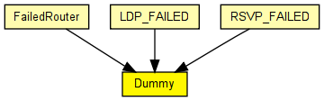

Implementation of a failed router. Does nothing and simply discards any incoming messages.
The following diagram shows usage relationships between types. Unresolved types are missing from the diagram. Click here to see the full picture.
The following diagram shows inheritance relationships for this type. Unresolved types are missing from the diagram. Click here to see the full picture.

If a module type shows up more than once, that means it has been defined in more than one NED file.
| FailedRouter (compound module) |
A failed IP router. Simply discards all packets it receives, and that's all. |
| LDP_FAILED (compound module) |
Failed router. Discards all incoming traffic and generates nothing. Its interface (gates, parameters) is fully compatible with the LDP_LSR router and node failures may thus be simulated by replacing the RSVP_LSR with LDP_FAILED. |
| RSVP_FAILED (compound module) |
Failed router. Discards all incoming traffic and generates nothing. Its interface (gates, parameters) is fully compatible with the RSVP_LSR router and node failures may thus be simulated by replacing the RSVP_LSR with RSVP_FAILED. |
| Name | Direction | Size | Description |
|---|---|---|---|
| in [ ] | input | ||
| out [ ] | output | ||
| ethIn [ ] | input | ||
| ethOut [ ] | output |
// // Implementation of a failed router. Does nothing and simply discards any // incoming messages. // simple Dummy { gates: input in[]; output out[]; input ethIn[]; output ethOut[]; }